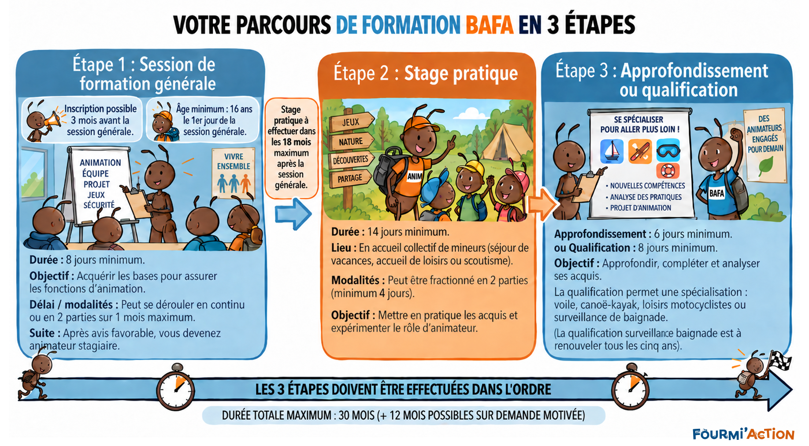

Formation générale
Découvrir les repères et les pratiques de l’animation.
Une formation générale et deux approfondissements prévus en 2027 au cœur d’Orléans, en petit groupe, à un tarif accessible et payable en plusieurs fois sans frais.
Le brevet d’aptitude aux fonctions d’animateur prépare à l’animation occasionnelle auprès des enfants et des jeunes en accueils collectifs de mineurs. Il s’inscrit dans une démarche d’engagement citoyen.
Découvrir les repères et les pratiques de l’animation.
Mettre en œuvre ses apprentissages sur le terrain.
Enrichir ses pratiques ou développer une compétence spécifique.
Huit jours pour acquérir les bases de l’animation et préparer son stage : jeux, mises en situation, projets et temps de bilan.
Dès 16 ans révolusQuatorze jours sur le terrain, auprès de mineurs, dans un accueil déclaré : en une ou deux parties d’au moins quatre jours.
À commencer dans les 18 moisAnalyser et enrichir sa pratique à partir de l’expérience du stage, ou développer une compétence spécialisée.
8 jours en qualification Tout le parcours en 30 mois maximumConsulter les conditions officielles du BAFA

Apprendre à animer, c’est expérimenter, observer ce qui se passe, en parler et essayer à nouveau. Notre projet associe des situations concrètes, des échanges et des temps de bilan.
Notre projet de formation tient compte de vos besoins, de votre expérience et de vos façons d’apprendre, souvent appelées « styles d’apprentissage ». Nous varions les supports, les échanges et les mises en pratique pour vous aider à progresser. Votre formateur référent vous accompagne et fait régulièrement le point avec vous pour adapter l’accompagnement.
Un document pour préparer la recherche de votre stage pratique.
Des pistes et contacts en Centre-Val de Loire pour rechercher un stage pratique BAFA ou un emploi d’animation.
Un espace destiné à réunir les documents utiles aux équipes, de la préparation de la session jusqu’au bilan :
Le guide est déjà accessible avec le mot de passe de l’équipe. Les autres ressources seront ajoutées progressivement.
Ces deux types de session constituent des possibilités pour la dernière étape du parcours BAFA. La qualification développe une compétence spécifique. Consultez les conditions et prérequis officiels avant de choisir.
Vous devez avoir 16 ans révolus au premier jour de la formation générale BAFA. Vous pouvez préparer votre inscription administrative sur le portail officiel BAFA-BAFD avant le début de la session.
Les montants ci-dessus sont prévisionnels. Les prestations incluses et le prix total seront précisés sur chaque fiche de session ouverte. Aucune qualification ni formule avec hébergement n’est programmée pour 2027 dans le guide actuel.
Vous pouvez solliciter la CAF et les collectivités locales : votre mairie, votre département ou votre région. Vous pouvez également interroger votre employeur sur une éventuelle prise en charge. Les conditions et les montants varient selon votre situation et les organismes : renseignez-vous avant votre inscription et vérifiez les pièces à fournir et les délais de demande.
Écrivez-nous pour demander un échange individuel. Vous n’avez pas besoin d’envoyer un diagnostic médical dans votre première demande.
Le projet prévoit un accompagnement à la recherche : préparation des candidatures, repères sur les structures et mise en relation. Un stage ou un emploi ne peut pas être garanti.
Les prochaines dates seront publiées dès confirmation de l’habilitation officielle permettant d’ouvrir les formations. Vous pouvez dès maintenant nous contacter pour faire part de votre intérêt ; cette démarche ne constitue pas une inscription confirmée.
296€
la session de 6 jours, avant aides347€
la session de 8 jours, avant aides20max
stagiaires, avec un directeur et un formateur16ans
révolus au premier jour de la formation généraleSous réserve de l’habilitation. Tarifs par personne et par session, avant toute aide éventuelle. Lieu envisagé : CIJ, 48 rue du Bourdon Blanc, 45000 Orléans.
« Animation sociale »
Prévisionnel, sous réserve de l’habilitation.
Être prévenu·e de l’ouverture« Grandes animations »
Prévisionnel, sous réserve de l’habilitation.
Être prévenu·e de l’ouvertureLa première étape du BAFA
Le 24 décembre n’est pas travaillé. Prévisionnel, sous réserve de l’habilitation.
Être prévenu·e de l’ouvertureLe 24 décembre n’est pas une journée de formation. Aucune qualification ni session avec hébergement n’est programmée en 2027.
Ces montants présentent notre projet : aucune formule n’est actuellement ouverte à l’inscription. Le prix total et les prestations seront confirmés sur chaque future fiche de session avant tout engagement.
Aucune qualification ni formule avec hébergement n’est programmée pour 2027 dans le guide actuel. Les montants correspondants sont des repères pour le projet, sans possibilité de réservation.
Formation générale
Approfondir sa pratique
Développer une compétence spécifique
La formation de qualification peut être faite en plus de la formation d’approfondissement ou à la place de la formation d’approfondissement.
Des facilités de paiement sans frais : l’échéancier se convient directement avec l’association.
L’équipe vous aide à identifier les aides possibles : CAF, collectivités, CCAS, employeurs. Leur attribution dépend de chaque financeur.
Le CIJ, 48 rue du Bourdon Blanc, en plein centre d’Orléans.
Voir sur la carteMises en situation, jeux, projets et temps de bilan, avec un référent qui fait le point avec vous.
Un annuaire gratuit des structures du Loiret et du Centre-Val de Loire, et de l’aide pour vos candidatures.
Ouvrir l’annuaireDifficulté avec l’écrit, handicap, rythme, appréhension du groupe : on en parle avant, en toute confidentialité.
Les inscriptions sont fermées. Aucun règlement n’est demandé sur le site. À l’ouverture, les étapes seront les suivantes :
Inscriptions, annulation et rétractation
Des permanences physiques seront organisées pour faciliter les inscriptions, répondre à vos questions et vous aider dans vos démarches. Le lieu, les dates et les horaires seront communiqués prochainement sur notre site Internet.
Vous avez besoin d’aide pour les démarches numériques, pour préparer la recherche d’un stage pratique ou pour évoquer un besoin d’aménagement ? Contactez-nous afin d’échanger sur votre situation.
Contacter l’équipeFourmi’Action, association d’éducation populaire de la métropole d’Orléans, prévoit ses sessions BAFA 2027 au CIJ, 48 rue du Bourdon Blanc, à Orléans : une formation générale en décembre et deux approfondissements, en mai et en août. Fourmi’Action a déposé une première demande d’habilitation régionale BAFA en Centre-Val de Loire pour la période du 1er janvier 2027 au 31 janvier 2030. Tant qu’elle n’est pas confirmée, les sessions 2027 sont prévisionnelles et les inscriptions ne sont pas ouvertes.
Tarifs prévisionnels par personne et par session, avant toute aide : formation générale 347 € (408 € avec la restauration du midi) ; approfondissement 296 € (342 € avec la restauration du midi). Le prix total est confirmé sur chaque fiche de session avant tout engagement.
Oui. Des facilités de paiement sans frais sont proposées : l’échéancier peut être convenu avec l’association. L’équipe aide aussi à repérer les aides possibles (CAF, collectivités, CCAS, employeurs) ; leur attribution dépend de chaque financeur et n’est pas garantie.
Approfondissement « Animation sociale » du 6 au 11 mai 2027, approfondissement « Grandes animations » du 16 au 21 août 2027, formation générale du 21 au 23 puis du 25 au 29 décembre 2027 (le 24 décembre n’est pas travaillé). Dates prévisionnelles, sous réserve de l’habilitation.
Fourmi’Action a déposé une première demande d’habilitation régionale BAFA en Centre-Val de Loire pour la période du 1er janvier 2027 au 31 janvier 2030. Tant qu’elle n’est pas confirmée, les sessions 2027 sont prévisionnelles et les inscriptions ne sont pas ouvertes. Les dates définitives et les inscriptions seront publiées sur fourmiaction.fr dès la confirmation.
Il faut avoir 16 ans révolus au premier jour de la formation générale et être inscrit sur le portail officiel BAFA-BAFD.
À l’ouverture : consulter la fiche de la session sur fourmiaction.fr, s’inscrire sur le portail officiel BAFA-BAFD, puis choisir sa session et sa formule sur HelloAsso. L’équipe vérifie le dossier et envoie la convocation. En attendant, on peut demander des informations par e-mail ou par téléphone.
Fourmi’Action met à disposition un annuaire gratuit des structures du Centre-Val de Loire et de la métropole d’Orléans pour chercher un stage pratique BAFA, et accompagne la préparation des candidatures.
Vingt stagiaires au plus, avec un directeur et un formateur par session.
Mise à jour le 13/11/2026, d’après le guide « Les informations à connaître avant de s’inscrire au BAFA ». Formation ouverte aux habitants d’Orléans, de la métropole (Fleury-les-Aubrais, Saint-Jean-de-Braye, Saint-Jean-le-Blanc, Olivet, Saran…) et de tout le Loiret.